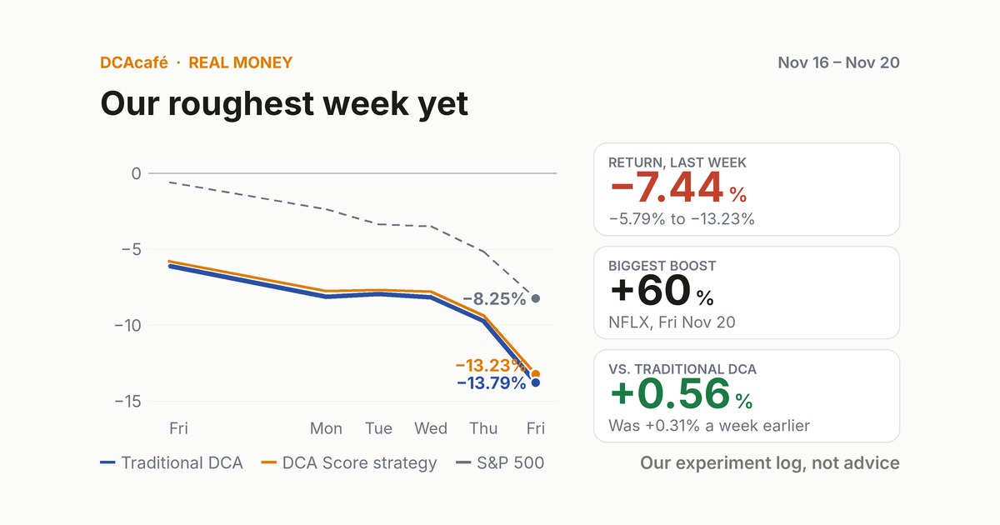

DCAcafé · Real money
It started with NVIDIA
Last week: Nov 16 to Nov 20

Last week began with NVIDIA, down 4.12% on Monday. By Friday an AI rout had wiped out Nasdaq's gains. All three of our assets fell too, and the DCA Score leaned in on every order. Did leaning in change the ride?
See the live experiment All weeks
This is our own experiment log, not advice. Numbers are cumulative returns on the money put in, taken from a real brokerage account, compared with a simulated traditional DCA and an S&P 500 reference (price only, before fees and dividends). Past results say nothing about what comes next.